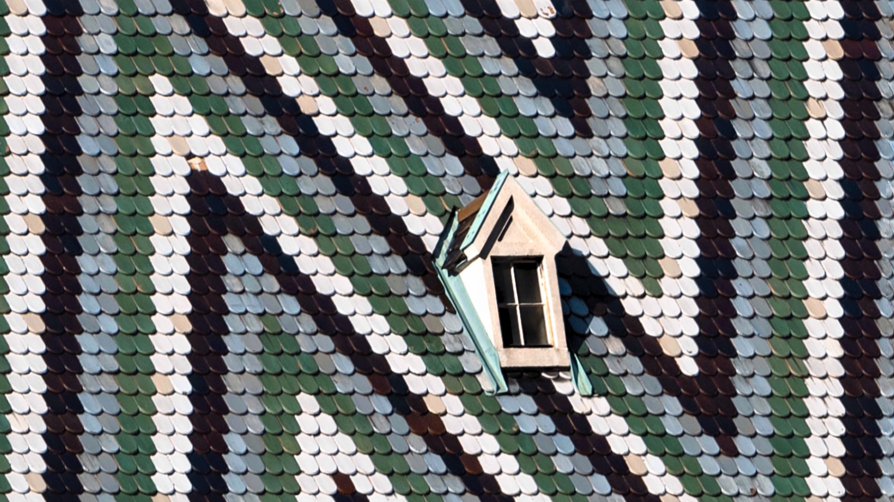

Publiserad:
Mönster på Stefansdomen!
Den magnifika Stefansdomen i Wien är inte bara känd för sin arkitektur utan även för sitt unika takmönster. Taket är täckt av över 230 000 glaserade takpannor som bildar färgstarka geometriska mönster och symboler, inklusive det österrikiska örnemblemet. Detta konstverk är en hyllning till både gotisk design och nationell stolthet och lockar besökare från hela världen.
Varje pannas plats är noggrant utvald för att skapa en visuell harmoni som kan ses från flera kilometers avstånd. Takets briljans kontrasterar vackert mot den mörka stenstrukturen i katedralens väggar och ger byggnaden ett nästan sagolikt uttryck. Under sommarmånaderna speglas solens strålar i de glaserade pannorna och förvandlar taket till en skimrande mosaik som förtrollar både turister och lokalbefolkning.
Förutom sin estetiska skönhet bär taket även på en rik historia. Det färgglada mönstret är en symbol för Wiens kulturella och politiska arv, och det påminner om stadens starka band till det tidigare Österrike-Ungern. Att klättra upp till tornets utsiktsplattform ger inte bara en fantastisk panoramavy över Wien, utan också en närmare blick på takets detaljer, vilket gör besöket till en oförglömlig upplevelse.
Stefansdomen står som en stolt symbol för Wiens historia och konstnärliga arv – en plats där arkitektur, konst och kultur möts i ett sprakande färgsprakande möte ovanför stadens takåsar.